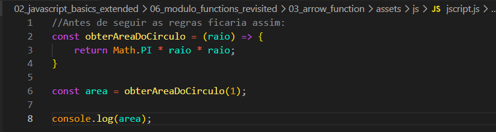
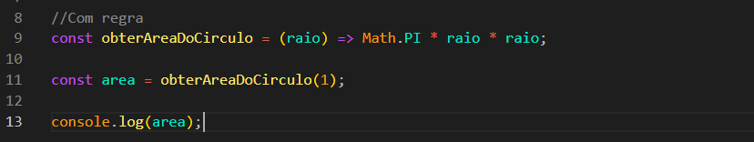
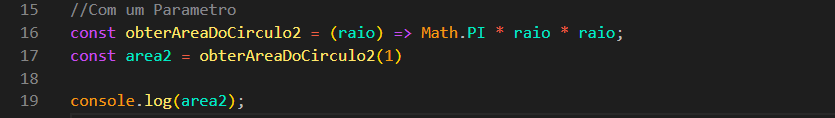

Arrow Function
Intro
Aqui iremos ver como podemos estar declarando arrow functions.
Aqui iremos ver como podemos estar declarando arrow functions.

Aqui temos alguams regras como, quando chamamos nossa funcao e ela imediatamente retorna uma expressao como nesse caso (obs: nao precisa ser uma expressao, assim que temos um retorno (return imediato)), podemos obtir as nossas chaves e a palavra return. Ficando da seguinte forma:

Quando estamos passando apenas um argumento para nossa funcao, tambem podemos fazer outra coisa, no caso omitir o nosso parentes, ficando da seguinte forma:
